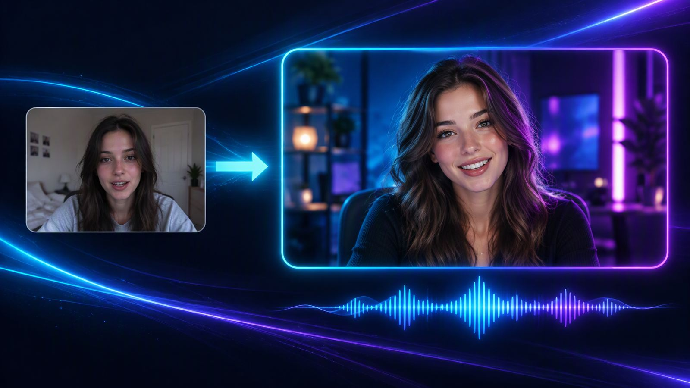
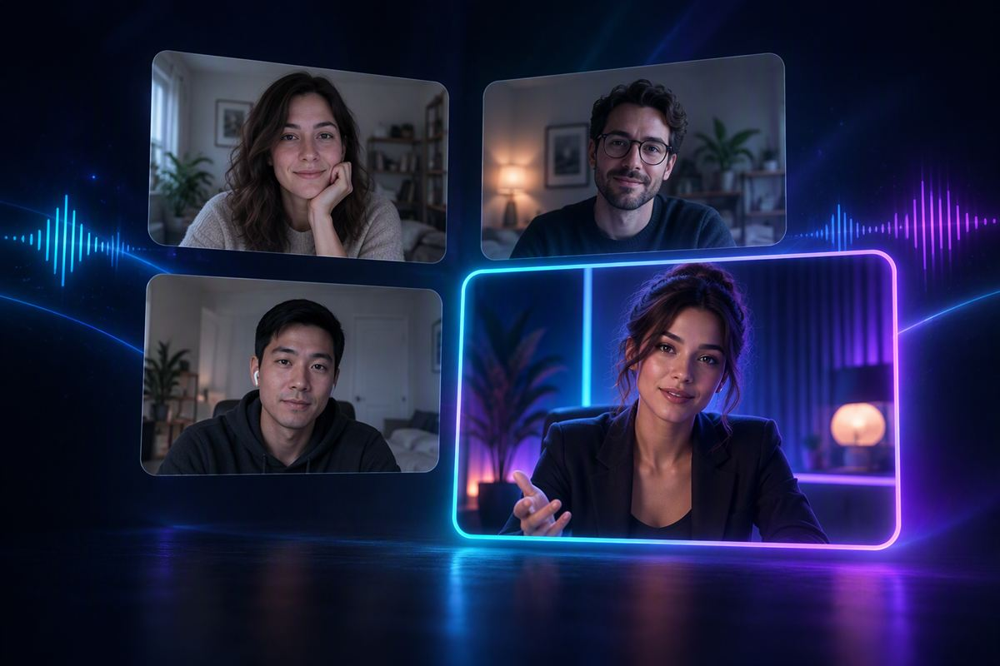

Your camera, rebuilt while you talk.
Stream Live turns your webcam into a live AI presenter and your microphone into a clean cloned voice, then hands both to OBS, Zoom, Teams, Chrome or WhatsApp as if they were a camera and a mic. Nothing to render, nothing to upload: what you say is what goes out.
Three ways to run it — video and voice together, voice only, or the AI picture with your own voice. Pick one in the app, press Start.
One free minute of video on every new account, on the computer you install it on. No card, no trial period to cancel.
How it works
Pick a look, press Start, and choose Stream Live as the camera in whatever app you are already using.
Stream Live Camera and
Stream Live Microphone — on Windows the audio one may be listed as CABLE Input
or VB-Audio Virtual Cable, which is the same device — on a Mac they are named
OBS Virtual Camera and BlackHole 2ch. Then press Start in Stream Live. Your own
camera stays off-air.
What you get
Once you are running, your app list gains a camera and a microphone that did not exist before. Point anything at them — a stream, a meeting, a browser call.
On Windows the installer adds Stream Live Camera and any app can select it: OBS, Zoom,
Teams, Google Meet, WhatsApp Web. On a Mac the picture goes out through OBS instead — one free
program, three clicks, covered under
Mac install.
Voice on its own, or paired with video. The avatar always hears you the moment you open your mouth; the app learns how your room sounds while you are quiet and holds that room noise back from the microphone your callers use, so a fan or a television never reaches the call. On a Mac a free silent speaker called BlackHole carries it to your call app.
Full frame for OBS scenes, or an exact 9:16 portrait window for phone-shaped video — calls and captures both receive it tall.
Windows 10 and 11 get both devices straight from the installer, nothing else to fetch. A Mac installs the same way and then needs the two free helpers, because Apple only lets an app it has approved host a system webcam.
Downloads
Pick the one that matches your computer and the download starts. If you would rather a person check your machine with you first, message on Telegram instead — same file.
StreamLive-Setup-1.8.10.exe
Double-click it and accept the security prompt. Part way through it asks to add one free audio
driver — press Yes. When it finishes, restart the computer: the microphone does not
work until you do. Nothing else to download.
StreamLive-1.8.10-arm64.dmg
For M1, M2, M3 and M4 Macs. Installs like any other Mac app, then follows the
five steps below so a call app can see it.
StreamLive-1.8.10-x64.dmg
For Intel Macs from 2020 and earlier. Same five steps as the Apple-chip disk.
arm64 disk. If it says Processor: Intel…, take the
x64 one. Either way the app updates itself from inside, so this is the last time you
download it by hand.
Styles
Switch look mid-session from the app. Movement, speech and eye contact all stay yours.
The free minute carries a small mark on the picture. Minutes you buy have none — nothing to switch on, it is gone once you are paid up.
Minutes
Stream Live is metered in minutes of airtime. Your balance sits in the app and counts down only while you are actually on air, so a session you never started costs you nothing.
1 free minute of video
No card, no trial period to cancel. After that, minutes are priced in the app.
Mac install
Five steps, about three minutes. Do them in order; steps 1 and 2 are one-time, and steps 4 and 5 are what make a call app see the AI picture and hear your voice.
.dmg you downloaded, drag
Stream Live onto Applications, then eject the disk. Keep it in Applications — running it
from the Downloads folder is what makes later updates fail.Cmd + Space, type Terminal, press Return) and paste this line, then press
Return:xattr -dr com.apple.quarantine "/Applications/Stream Live.app"No such file, the app is not in Applications yet, so go back to step 1. If
it asks for permission, run the same line with sudo in front of it and type your Mac login
password — nothing appears on screen while you type it, which is normal.macOS only accepts a system webcam from software Apple has approved with a special entitlement, so on a Mac the picture always travels through OBS. Everything else — the styles, portrait mode, the automatic microphone, your minute balance — works the same as on Windows.
Questions
The things people ask most. Anything not answered here reaches a person on Telegram in one tap.
Windows 10 or 11 takes the Windows installer — that is the one most people want. A Mac takes the Apple chip disk if About This Mac says Chip: Apple M…, and the Intel disk if it says Processor: Intel…. Everything is under Downloads.
Nothing. Every new account carries one free minute of video, with no card and no trial period to cancel. It does not expire while you decide. After that, airtime is bought in minutes inside the app, by card or mobile money.
Anywhere a camera and microphone can be chosen: OBS, Zoom, Microsoft Teams, Google Meet, WhatsApp Web and most browser-based calls. On Windows the installer adds both devices itself; on a Mac the two free helpers carry them, which is what the Mac walk-through covers.
Yes. Nothing is rendered afterwards and nothing is uploaded to be processed — what you say is what goes out, and the avatar keeps your movement, your timing and your eye contact.
If you reached this page from an email link, the link reached us — but Stream Live does not change a password through a web form, so there is nothing to fill in here.
Airtime stops when your balance hits zero, and the call closes rather than running into debt. Add minutes before a long session: the app tells you the balance at all times.
Reach the team
One place to send it: Telegram. Include the email your account was created with, the app version shown on the sign-in screen, and what happened — that is usually enough to fix it in one reply.
Download Stream Live, pick a look, and join your next call as the version you would actually put on camera. One free minute is waiting on the account you create.